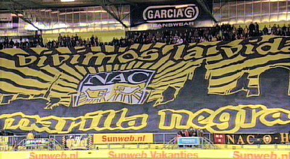
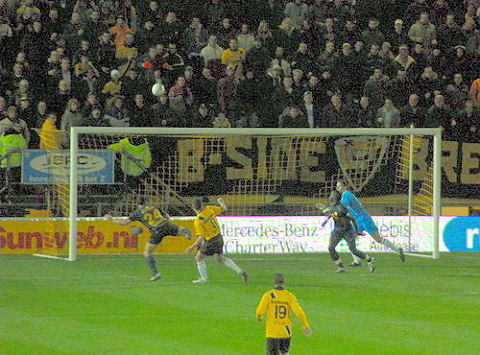
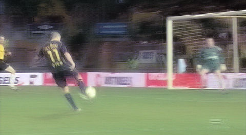
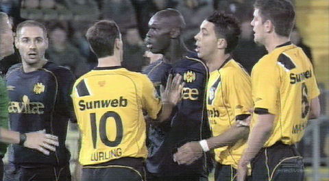
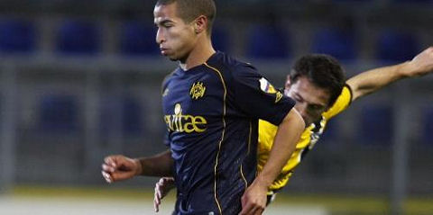
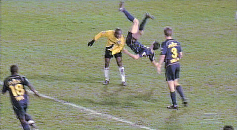
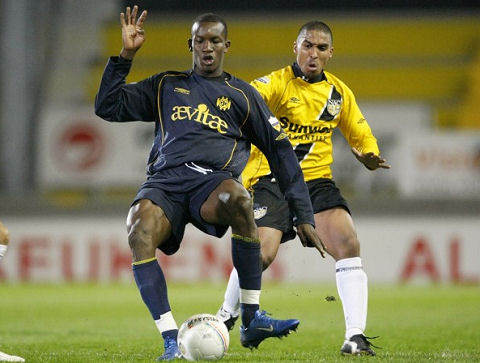
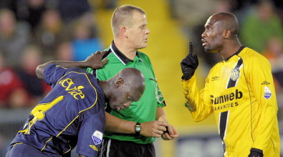

|
NAC
- Roda JC (0-0) 23 november 2007
|

Een uitverkocht Rat Verlegh stadion.

Al na drie minuten is er een grote kans voor NAC. Ammi gaat buitenom maar zijn
voorzet wordt gemist door Amoah waarna Molhoek over schiet.
foto: sv-online

Kans voor Oper na ruim een halfuur. Zijn schot belandt op de knuisten van
doelman
Ten Rouwelaar.

Enige consternatie na een gele kaart voor Ammi. Zes minuten daarvoor had Hadouir
al een discutabele gele kaart te pakken. 
In de 49e min. wordt Hadouir gehaakt door Elshot. Van Hulten durft geen penalty
toe te kennen en Hadouir durft niet te protesteren omdat hij al eerder een gele
kaart
heeft gekregen.
foto: voetbalprimeur

Spectaculaire duikeling van de Fauw die zich hierbij blesseert.

Cisse lijkt eindelijk door te breken. De Ivoriaan wint veel duels op fysiek en
is ook
technisch beter geworden.
foto: de telegraaf

De kwaliteitsarme wedstrijd met twee ploeterende ploegen waarin beide teams
tot EEN kans kwamen eindigde in 0-0. Meer was het niet waard.
foto: fcupdate
NAC Breda - Roda JC 0-0.
Scheidsrechter: Van Hulten.
Toeschouwers: 15.500. Gele kaart: Ammi (NAC), Hadouir (Roda JC).
NAC Breda: Ten Rouwelaar, Elshot, Penders, Zwaanswijk, Mtiliga, Féher, Stam,
Molhoek, Ammi (87. Tamerus), Amoah, Lurling (61. Kolkka).
Roda JC: Castro, Sonkaya (69. Saeijs), Kah, De Fauw, Bodor; Hadouir (81.
Janssen), Meeuwis, Tioté, Lamah, Cissé, Oper (67. Matondo).
© Koempels Pleasure Dome
|